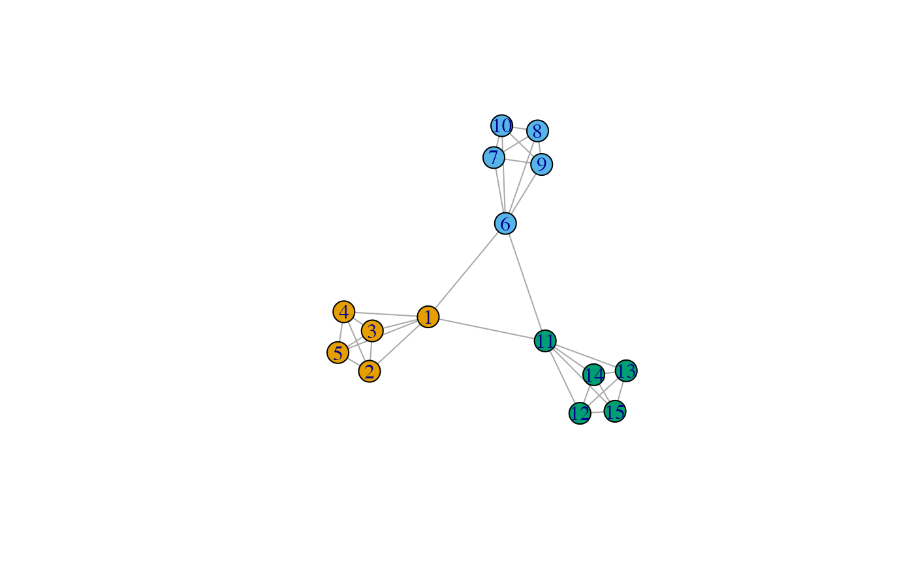

This function implements the Markov Clustering (MCL) algorithm for finding community
structure, in an analogous way to other existing algorithms in igraph.
cluster_markov(
g,
add_self_loops = TRUE,
loop_value = 1,
mcl_expansion = 2,
mcl_inflation = 2,
allow_singletons = TRUE,
max_iter = 100,
return_node_names = TRUE,
return_esm = FALSE
)The input graph object
Logical, whether to add self-loops to the matrix by
setting the diagonal to loop_value
Numeric, the value to use for self-loops
Numeric, cluster expansion factor for the Markov clustering iteration - defaults to 2
Numeric, cluster inflation factor for the Markov clustering iteration - defaults to 2
Logical; if TRUE, single isolated vertices are allowed
to form their own cluster. If set to FALSE, all clusters of size = 1 are
grouped in one cluster (to be interpreted as background noise).
Numeric value for the maximum number of iterations for the Markov clustering
Logical, if the graph is named and set to TRUE, returns
the node names.
Logical, controlling whether the equilibrium state matrix should be returned
This function returns a communities object, containing the numbers of
the assigned membership (in the slot membership). Please see the
igraph::communities() manual page for additional details
This implementation has been driven by the nice explanations provided in
https://sites.cs.ucsb.edu/~xyan/classes/CS595D-2009winter/MCL_Presentation2.pdf
https://medium.com/analytics-vidhya/demystifying-markov-clustering-aeb6cdabbfc7
https://github.com/GuyAllard/markov_clustering (python implementation)
More info on the MCL: https://micans.org/mcl/index.html, and https://micans.org/mcl/sec_description1.html
van Dongen, S.M., Graph clustering by flow simulation (2000) PhD thesis, Utrecht University Repository - https://dspace.library.uu.nl/handle/1874/848
Enright AJ, van Dongen SM, Ouzounis CA, An efficient algorithm for large-scale detection of protein families (2002) Nucleic Acids Research, Volume 30, Issue 7, 1 April 2002, Pages 1575–1584, https://doi.org/10.1093/nar/30.7.1575
library("igraph")
#>
#> Attaching package: ‘igraph’
#> The following object is masked from ‘package:GenomicRanges’:
#>
#> union
#> The following object is masked from ‘package:IRanges’:
#>
#> union
#> The following object is masked from ‘package:S4Vectors’:
#>
#> union
#> The following objects are masked from ‘package:BiocGenerics’:
#>
#> normalize, path, union
#> The following objects are masked from ‘package:stats’:
#>
#> decompose, spectrum
#> The following object is masked from ‘package:base’:
#>
#> union
g <- make_full_graph(5) %du% make_full_graph(5) %du% make_full_graph(5)
g <- add_edges(g, c(1, 6, 1, 11, 6, 11))
cluster_markov(g)
#> IGRAPH clustering mcl, groups: 3, mod: NA
#> + groups:
#> $`1`
#> [1] 1 2 3 4 5
#>
#> $`2`
#> [1] 6 7 8 9 10
#>
#> $`3`
#> [1] 11 12 13 14 15
#>
V(g)$color <- cluster_markov(g)$membership
plot(g)
